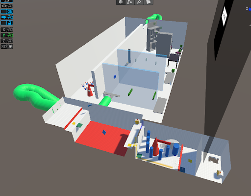
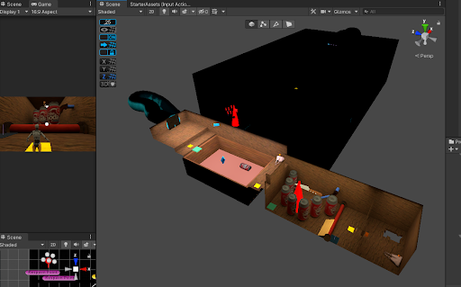
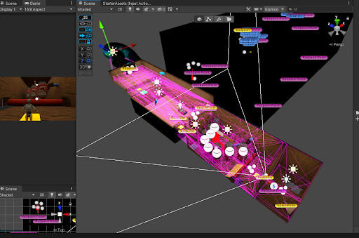

Tomtar
Project Work in Computer Game Design - masters's course - Graded B
Platform
Windows PC
Engine
Unity
Tools used
Unity C# scripting, Unity plugin ProBuilder, Blender, Discord.
Duration
10 weeks
Team Size
5
Roles
Level Designer, Gameplay Programmer, Lighting Artist
The game
Tomtar: A Long Way From Home is a cooperative puzzle platformer designed to be played by siblings and friends. The game tells the story of two siblings Britt and Nils as they are accidentally taken from their home and dropped off in a new house. The siblings must work together and use their special powers to learn about their whereabouts, avoid the humans, and make it back home. The game is particularly taking inspiration from the recent successful game "It Takes Two".
The game can be downloaded [here].
The code for the game is available here: [github.com/frilel/Tomtar-2022].
I kept a blog that documented my work process in more detail that can be read [here].
A small website was made to "promote" the game, available [here].
A Playthrough
The Project
For this project I wanted to try to focus on designing the game, making the gameplay and experience fun. Being the one with the most experience with working in Unity, I also programmed the majority of the game. One thing this project made me realize is that I enjoyed Level Designing and that knowledge about Human-Computer Interaction is good to have in that role. Down below I'll describe some of the parts I worked on in this project.
Programming
Setting up the project
Since the rest of the team was inexperienced with game development, and me not really wanting to focus on engineering on this project, I set up the basics of the game with a premade character controller template that Unity recently had begun providing. The template had a basic character controller premade that I would extend upon. The template also made use of Unity's "new" camera system Cinemachine, which was really nice to work with and I would have loved to explore more its capabilities making custom camera transitions, camera shakes, cutscenes etc. I also had the project make use of Unity's "new" input system which had in-built basic split screen support. With all these systems having readily available documentation my hopes were that the rest of the team could more easily start creating things for the game.
Grappling Hook
This mechanic can be seen in the above playthrough at 1:42. Taking inspiration from a gameplay mechanic in It Takes Two where one player throws out nails on walls that the other player can swing on using a hammer. We wanted something similar we called Nail and Thread. I took on the task of creating this mechanic. Initially I wanted the player "swinging" like Tarzan but had issues with getting this physics interaction working well with the template's character controller. Instead of spending time creating/switching to a physical-based character controller, I made the mechanic a more simple "get pulled towards target" grapple hook.
 As can be seen in this GIF of an early implementation, the player with blue legs throws out green cubes that the the other player can attach
their grappling hook.
As can be seen in this GIF of an early implementation, the player with blue legs throws out green cubes that the the other player can attach
their grappling hook.
 In this GIF you can see the player with orange legs traversing with their grappling hook. As the character controller wasn't physical-based,
I scripted the motion following this algorithm:
In this GIF you can see the player with orange legs traversing with their grappling hook. As the character controller wasn't physical-based,
I scripted the motion following this algorithm:
Level Designing
Level 1
Level 1 is the majority of the game. In the above playthrough video, the level ends at 8:40. I designed, prototyped, and scripted everything by myself. What I didn't do was placing the final assets. The idea was of course to have platform puzzles that require cooperation and the use of each characters unique abilites to solve. Details can be read in Section 4.2 in the [GDD].
Being the first time I designed a level, I could work more creatively by quickly prototyping designs in Unity. I got aquainted with the Unity plugin [ProBuilder] and had lots of fun with it. Below I show how I had prototyped the first puzzle the players encounter in the playthrough above.
 The players are in a closed off room, with only a small opening in the wall that the smaller character can enter. They learn that only the
larger character can push these boxes.
The players are in a closed off room, with only a small opening in the wall that the smaller character can enter. They learn that only the
larger character can push these boxes.
 The smaller character enter the small opening. On the other side there is something on the ground, stepping on it opens a door for
the other player.
The smaller character enter the small opening. On the other side there is something on the ground, stepping on it opens a door for
the other player.
 The players realize they cannot jump high enough to get up on this obstacle. What to do?
The players realize they cannot jump high enough to get up on this obstacle. What to do?
 This box they had could help them get up!
This box they had could help them get up!
Later on in the development, I had also implemented a mechanic that respawns these boxes if they get pushed into holes etc.
During playtesting, players didn't know that this mechanic existed and was confused about it. I therefore added a part to this scene
where the player would be taught that the respawn mechanic exists.
 The player is forced to push down the box, and sees how it respawns from this handbag. Player will hopefully now know that other handbags in
the level can respawn boxes.
The player is forced to push down the box, and sees how it respawns from this handbag. Player will hopefully now know that other handbags in
the level can respawn boxes.
Lighting
Lighting the Levels
As part of designing the Level 1, I wanted to learn how lighting the world worked in Unity Universal Render Pipeline. I knew that lights would have to be baked, being an indoor environment. I researched how to go about it and how lightmapping worked in Unity. A very interesting area of technology. Lighting in the High Definition Render Pipeline seemed even more fun, but I kept this project in URP.
More details about this process can be read in the DevBlog [Level 1] & [Level 2].
Here's how Level 1 looked with just dynamic lighting: 
Here's how Level 1 looked while I was in the process of putting out baked light: 
Baked lighting only works with static objects. In order to have dynamic objects, such as the character, being lit I used light probes: 
How Level 2 looked before I worked on it:
How Level 2 looked afterwards. Apart from working on the lighting I also kind of rebuilt the whole room and changed textures. In this scene it was quite important to have clear shadows that the players could identify as places to hide.